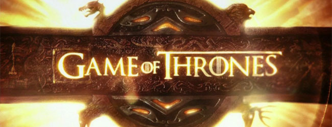

TV serija
Igra prestola (engl. Game of Thrones) amerièka je televizijska serija kablovske kuæe HBO (engl. HBO). Zasnovana je na romanima Džordža R. R. Martina iz serijala Pesma leda i vatre (engl. A Song of Ice and Fire). Tvorci serije su Dejvid Beniof i D. B. Vajs, a serija je snimana u studiju u Belfastu kao i na lokacijama u Severnoj Irskoj, Malti, Hrvatskoj, Islandu, Marokou i Škotskoj. Prva epizoda serije je premijerno prikazana u aprilu 2011. Do sada je emitovano 60 epizoda u šest sezona.
Radnja serije smeštena je na fiktivnim kontinentima Vesterosa i Esosa i prati dogaðaje èlanova nekoliko plemiækih porodica u borbi za Gvozdeni presto i vlast nad Sedam kraljevstava, kao i dolazak zime i mistiènih biæa sa severa. Serija se bavi temama kao što su socijalna hijerarhija, religija, lojalnost, seksualnost, graðanski rat i kriminal.
Igra prestola je dobila odliène kritike i pridobila je veliki broj obožavalaca. Nominovana je za Nagradu Emi za najbolju seriju za svih šest sezona, dok je 2015. i 2016. godine peta i šesta sezona dobila nagradu Emi za najbolju seriju u udarnom terminu. Pored toga je nominovana i za Zlatni globus i nagradu Hugo, dok je Piter Dinklidž 2011. i 2015. osvojio Emija za najboljeg sporednog glumca u dramskoj seriji te Zlatni globus za najboljeg sporednog glumca u seriji za ulogu Tiriona Lanistera.
U septembru 2016. godine serija Igra prestola je postala najnagraðivanija serija u istoriji.
Benioff i Veiss nameravaju da prilagode ceo, još uvek nepotpune Pesma leda i vatre serijal za televiziju. Nakon što je Game of Thrones poèela da prevazilazi objavljene romane u šestoj sezoni, serija je bila zasnovana na delovima buduæih romana koje pruža Martin i originalnog sadržaja. U aprilu 2016. godine, plana je bio da se snimi još 13 epizoda nakon šeste sezone: Sedam epizoda u sedmoj sezoni i šest epizoda u osmoj.
| Sezona | Poèetak emitovanja | Kraj emitovanja | Novela |
| Sezona 1 | 17.04.2011 | 19.06.2011 | Igra prestola |
| Sezona 2 | 01.04.2012 | 03.06.2012 | Sukob kraljeva sa poèetnim poglavljima Oluje maèeva |
| Sezona 3 | 31.03.2013 | 09.06.2013 | Dve treæine Oluje maèeva |
| Sezona 4 | 06.04.2014 | 15.06.2014 | Nasavak Oluje maèeva sa elementima Gozbe za vrane i Ples zmajeva |
| Sezona 5 | 12.04.2015 | 14.06.2015 | Gozba za vrane, Ples zmajeba i originalni sadržaj sa preskoèenim delovima Oluje maèeva i elementima iz Vetrova zime |
| Sezona 6 | 24.04.2016 | 26.06.2016 | Originalni sadržaj sa delovima Vetrova zime, i preskoèenim delovima Gozbe za vrane i Ples zmajeva |
| Sezona 7 | Sredinom 2017 | Sredinom 2017 | Originalni sadržaj sa delovima iz Vetrova zime i San o proleæu |